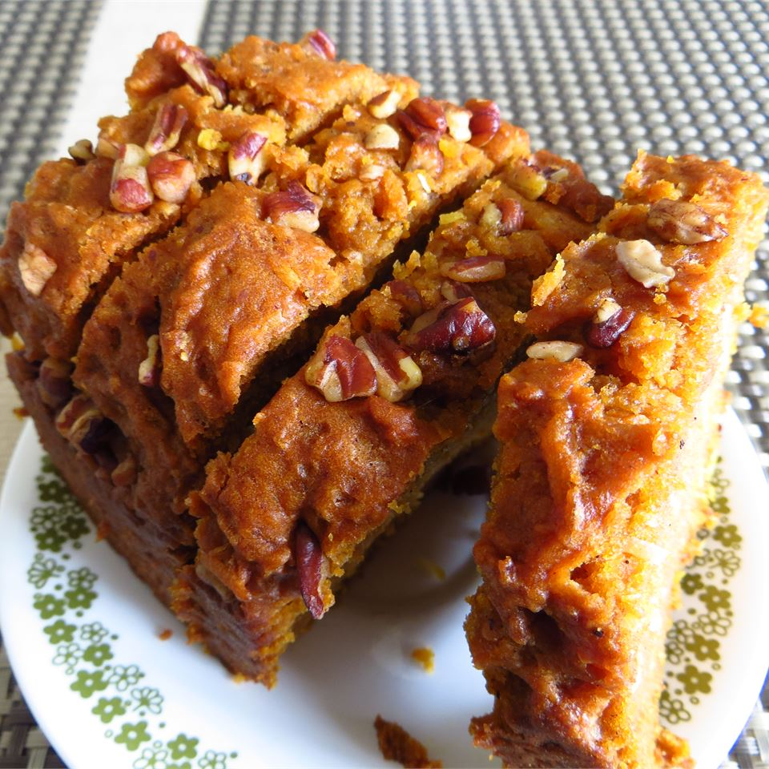

Super moist Pumpkin Bread
More recipes!

Description
This is an incredible bread. Its moistness comes from the addition of an unusual ingredient: coconut milk! Originally submitted to ThanksgivingRecipe.com.
Ingredients
- 3.5 cups all-purpose flour
- 2 cups packed dark brown sugar
- 0.6 cup white sugar
- 2 cups pumpkin puree
- 1 cup vegetable oil
- 0.6 cups coconut milk
- 2 teaspoons baking soda
- 1 teaspoon salt
- 1 teaspoon ground nutmeg
- 1.5 teaspoons ground cinnamon
- 0.6 cups flaked coconut
- 1 cup toasted walnuts, chopped
Steps
- Preheat oven to 350 degrees F (175 degrees C). Grease and flour two 8x4 inch loaf pans.
- In a large bowl combine the flour, brown sugar, white sugar, pumpkin puree, oil, coconut milk, baking soda, salt, ground nutmeg and ground cinnamon. Mix until all of the flour is gone. Fold in the nuts and flaked coconut. Pour batter into the prepared pans.
- Bake at 350 degrees F (175 degrees C) for 1 hour and 15 minutes or until a toothpick inserted in the center comes out clean. Remove from oven and cover loaves with foil tightly. Allow to steam for 10 minutes. Remove foil and turn out onto a cooling rack. Tent lightly with the foil and allow to cool completely.